Classes
0 class(es) passed
1 class(es) failed, 0 others
Tests
0 test(s) passed
1 test(s) failed, 0 others
Steps
549 log(s) passed
4 log(s) failed, 0 others
Classes
-
Running on Chrome May 12, 2022 13:21:47 failMay 12, 2022 13:21:47 May 12, 2022 16:20:16 2h 58m 29s+422ms
-
testMay 12, 2022 13:21:47 2h 58m 29s+409ms fail
-
clickloginMay 12, 2022 13:21:51 2h 58m 24s+989ms fail
Status Timestamp Details check_circle 1:22:08 PM enterData
Entered Value "socialmedia@ishield.ai" in Enter Your Email
check_circle 1:22:38 PM enterData
Entered Value "seleniumcopyaitest" in Email-Id
check_circle 1:22:41 PM enterData
Entered Value "MNBVCXz@7" in Password
check_circle 1:24:17 PM enterData
Entered Value " " in blog_freestyle_sentence
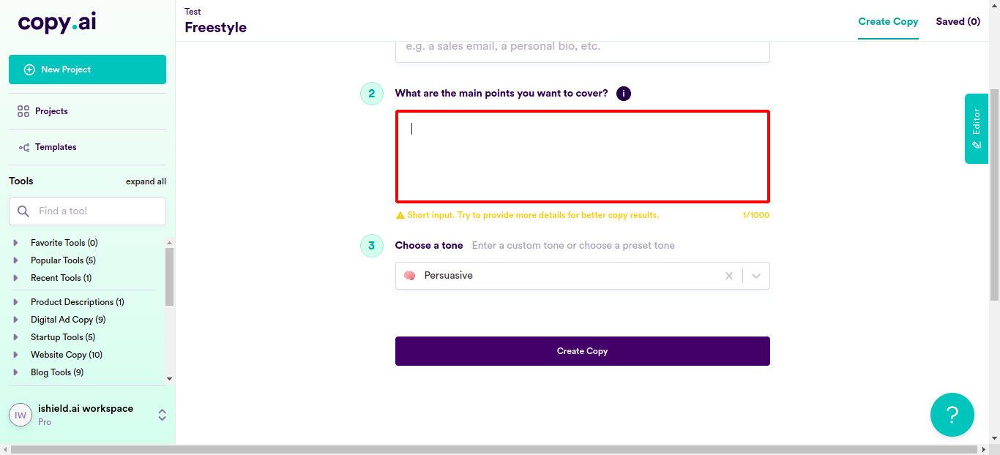check_circle 1:24:19 PM enterData
Entered Value "Hip Hop has historical experiences and consciousness of economically disadvantaged urban black youth" in blog_freestyle_sentence
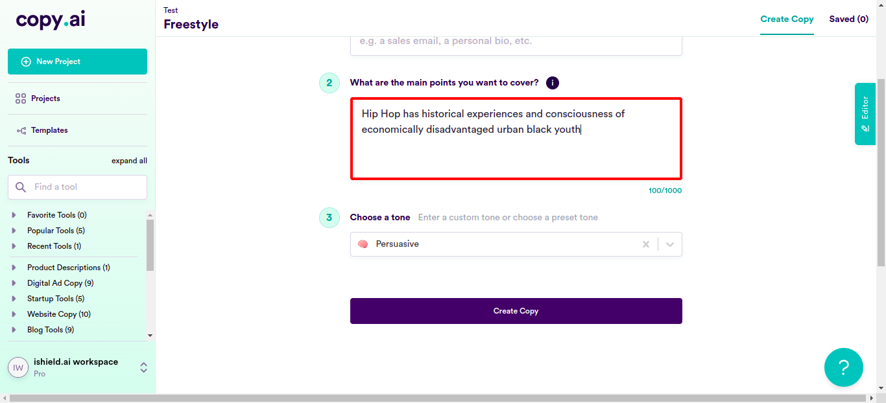check_circle 1:24:53 PM enterData
Entered Value " " in blog_freestyle_sentencecheck_circle 1:24:54 PM enterData
Entered Value "Although some elements of Hip Hop are problematic, it has to be seen as a reaction to racism" in blog_freestyle_sentencecheck_circle 1:25:28 PM enterData
Entered Value " " in blog_freestyle_sentencecheck_circle 1:25:30 PM enterData
Entered Value "White supremacy and racism are taking black lives in even greater number." in blog_freestyle_sentencecheck_circle 1:26:04 PM enterData
Entered Value " " in blog_freestyle_sentencecheck_circle 1:26:06 PM enterData
Entered Value "Hip Hop that celebrates misogyny, drug abuse and violence is not a realistic representation of black culture" in blog_freestyle_sentencecheck_circle 1:26:40 PM enterData
Entered Value " " in blog_freestyle_sentencecheck_circle 1:26:41 PM enterData
Entered Value "Young black men, out of desperation and hopelessness resort to crime within poor communities." in blog_freestyle_sentencecheck_circle 1:27:15 PM enterData
Entered Value " " in blog_freestyle_sentencecheck_circle 1:27:17 PM enterData
Entered Value "Hip hop has given an exposure to ghetto culture that celebrates Black lives." in blog_freestyle_sentencecheck_circle 1:27:51 PM enterData
Entered Value " " in blog_freestyle_sentencecheck_circle 1:27:52 PM enterData
Entered Value "The hip hop culture has led to rap music that highlights the unvoiced struggles of the artistic youth." in blog_freestyle_sentencecheck_circle 1:28:26 PM enterData
Entered Value " " in blog_freestyle_sentencecheck_circle 1:28:28 PM enterData
Entered Value "I'm not saying all rap is bad, I'm just saying that if you listen to it more than you listen to anything else, you probably have a taste for rhythmic lyrics and street vernacular." in blog_freestyle_sentencecheck_circle 1:29:02 PM enterData
Entered Value " " in blog_freestyle_sentencecheck_circle 1:29:04 PM enterData
Entered Value "We need to start appreciating these rappers for what they are: artists." in blog_freestyle_sentence
check_circle 1:29:37 PM enterData
Entered Value " " in blog_freestyle_sentencecheck_circle 1:29:39 PM enterData
Entered Value "Hip hop and rap glorify social issues like poverty and crimes, which leads to awareness." in blog_freestyle_sentencecheck_circle 1:30:13 PM enterData
Entered Value " " in blog_freestyle_sentencecheck_circle 1:30:14 PM enterData
Entered Value "Neglected mental health is a much bigger problem among young black men." in blog_freestyle_sentencecheck_circle 1:30:48 PM enterData
Entered Value " " in blog_freestyle_sentencecheck_circle 1:30:50 PM enterData
Entered Value "By rightly blaming racism for some problems, they aren taking a step towards justice." in blog_freestyle_sentencecheck_circle 1:31:24 PM enterData
Entered Value " " in blog_freestyle_sentence
check_circle 1:31:25 PM enterData
Entered Value "Black people are being held back by their own culture as well." in blog_freestyle_sentencecheck_circle 1:31:59 PM enterData
Entered Value " " in blog_freestyle_sentencecheck_circle 1:32:01 PM enterData
Entered Value "Hip hop music has helped the black community to challenge the status-quo." in blog_freestyle_sentencecheck_circle 1:32:42 PM enterData
Entered Value " " in blog_freestyle_sentence
check_circle 1:32:43 PM enterData
Entered Value "so many young black men emphasize on socio-economic issues in their music." in blog_freestyle_sentencecheck_circle 1:33:24 PM enterData
Entered Value " " in blog_freestyle_sentence
check_circle 1:33:26 PM enterData
Entered Value "Black people's accent should not lead to linguistic discrimination." in blog_freestyle_sentence
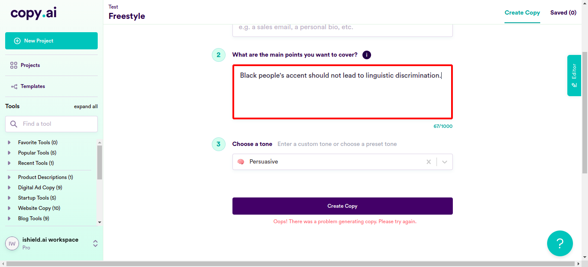check_circle 1:34:00 PM enterData
Entered Value " " in blog_freestyle_sentencecheck_circle 1:34:01 PM enterData
Entered Value "Black rappers encourage speaking the truth." in blog_freestyle_sentencecheck_circle 1:34:35 PM enterData
Entered Value " " in blog_freestyle_sentence
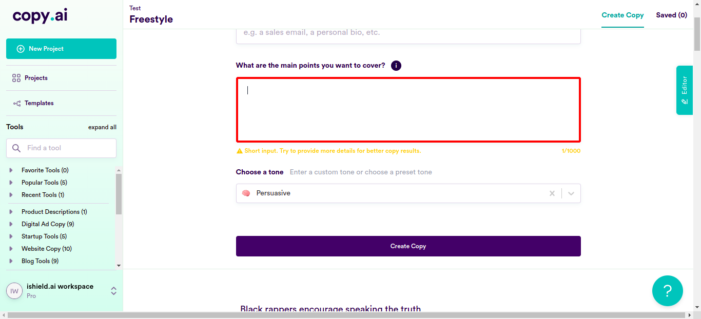check_circle 1:34:36 PM enterData
Entered Value "Hiphop promotes a life of equality." in blog_freestyle_sentencecheck_circle 1:35:10 PM enterData
Entered Value " " in blog_freestyle_sentencecheck_circle 1:35:12 PM enterData
Entered Value "The music black people are exposed to promotes the use of instruments like drums and banjo." in blog_freestyle_sentencecheck_circle 1:35:46 PM enterData
Entered Value " " in blog_freestyle_sentence
check_circle 1:35:47 PM enterData
Entered Value "Black people music encourages expression of the global black experience." in blog_freestyle_sentencecheck_circle 1:36:21 PM enterData
Entered Value " " in blog_freestyle_sentencecheck_circle 1:36:22 PM enterData
Entered Value "Black people often speak in their own dialect." in blog_freestyle_sentencecheck_circle 1:37:04 PM enterData
Entered Value " " in blog_freestyle_sentencecheck_circle 1:37:05 PM enterData
Entered Value "Rappers encourage black people to be themselves unapologetically." in blog_freestyle_sentencecheck_circle 1:37:39 PM enterData
Entered Value " " in blog_freestyle_sentencecheck_circle 1:37:40 PM enterData
Entered Value "Rappers encourage black people to write in their native language." in blog_freestyle_sentencecheck_circle 1:38:22 PM enterData
Entered Value " " in blog_freestyle_sentence
check_circle 1:38:23 PM enterData
Entered Value "Rap music inspires the black youth into thinking that the world is not a fair place." in blog_freestyle_sentencecheck_circle 1:38:57 PM enterData
Entered Value " " in blog_freestyle_sentencecheck_circle 1:38:58 PM enterData
Entered Value "Rap music does not affect the higher education of young black men in anyway." in blog_freestyle_sentencecheck_circle 1:39:32 PM enterData
Entered Value " " in blog_freestyle_sentence
check_circle 1:39:34 PM enterData
Entered Value "hip-hop can be an entry point to the platform of music for black youth." in blog_freestyle_sentencecheck_circle 1:40:08 PM enterData
Entered Value " " in blog_freestyle_sentencecheck_circle 1:40:09 PM enterData
Entered Value "In many ways, hip hop has created role models to give voice to marginalised populations." in blog_freestyle_sentencecheck_circle 1:40:43 PM enterData
Entered Value " " in blog_freestyle_sentencecheck_circle 1:40:45 PM enterData
Entered Value "It also gives artists from ghettos, a good sense of power. knowing that they are idolized by millions of people around the world." in blog_freestyle_sentence
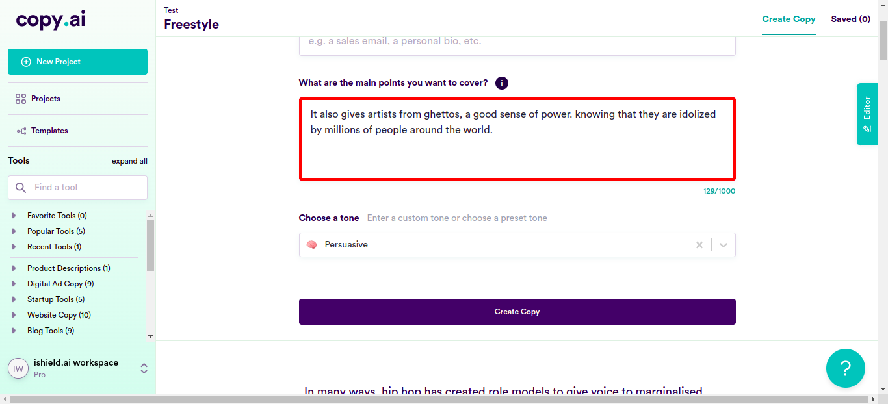check_circle 1:41:19 PM enterData
Entered Value " " in blog_freestyle_sentencecheck_circle 1:41:21 PM enterData
Entered Value "Most of black vocabulary is falsely associated to curse words." in blog_freestyle_sentencecheck_circle 1:41:55 PM enterData
Entered Value " " in blog_freestyle_sentencecheck_circle 1:41:56 PM enterData
Entered Value "Black men do respect women." in blog_freestyle_sentencecheck_circle 1:42:30 PM enterData
Entered Value " " in blog_freestyle_sentencecheck_circle 1:42:31 PM enterData
Entered Value "Black people work hard to earn money." in blog_freestyle_sentencecheck_circle 1:43:05 PM enterData
Entered Value " " in blog_freestyle_sentencecheck_circle 1:43:07 PM enterData
Entered Value "young black men are mindful of treating women with equality." in blog_freestyle_sentencecheck_circle 1:43:40 PM enterData
Entered Value " " in blog_freestyle_sentencecheck_circle 1:43:42 PM enterData
Entered Value "young people of color get the idea that they have to be a certain way to be cooler, a way that involves fitting into the stereotypical world." in blog_freestyle_sentencecheck_circle 1:44:24 PM enterData
Entered Value " " in blog_freestyle_sentence
check_circle 1:44:25 PM enterData
Entered Value "black women are well respected in the workplace." in blog_freestyle_sentencecheck_circle 1:45:06 PM enterData
Entered Value " " in blog_freestyle_sentence
check_circle 1:45:07 PM enterData
Entered Value "black women are smart and competent." in blog_freestyle_sentencecheck_circle 1:45:49 PM enterData
Entered Value " " in blog_freestyle_sentence
check_circle 1:45:50 PM enterData
Entered Value "black women are well groomed." in blog_freestyle_sentencecheck_circle 1:46:31 PM enterData
Entered Value " " in blog_freestyle_sentence
check_circle 1:46:33 PM enterData
Entered Value "The professional look of black women is unaffected by the way they style their hair." in blog_freestyle_sentencecheck_circle 1:47:14 PM enterData
Entered Value " " in blog_freestyle_sentence
check_circle 1:47:16 PM enterData
Entered Value "Black employees can wear their hair in their personal style even in professional settings." in blog_freestyle_sentencecheck_circle 1:47:57 PM enterData
Entered Value " " in blog_freestyle_sentence
check_circle 1:47:58 PM enterData
Entered Value "Wearing natural hair or dreadlocks is not against the dress code of professional settings." in blog_freestyle_sentencecheck_circle 1:48:40 PM enterData
Entered Value " " in blog_freestyle_sentence
check_circle 1:48:41 PM enterData
Entered Value "Wearing make up won't lead to you being discriminated as a black woman." in blog_freestyle_sentence
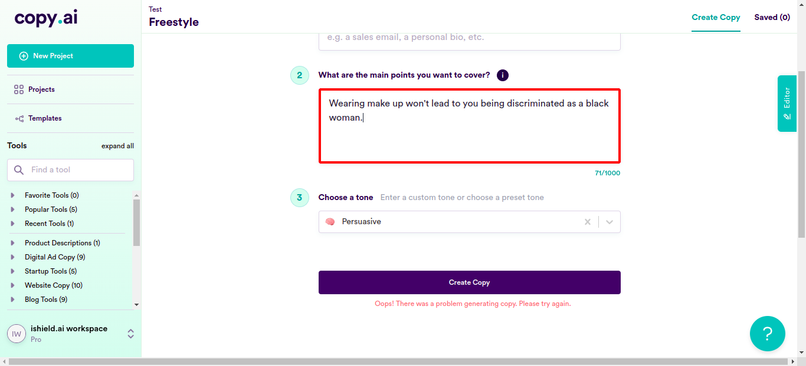check_circle 1:49:22 PM enterData
Entered Value " " in blog_freestyle_sentence
check_circle 1:49:24 PM enterData
Entered Value "Black women's hair is a personal choice irrevelent to social acceptance." in blog_freestyle_sentencecheck_circle 1:50:05 PM enterData
Entered Value " " in blog_freestyle_sentence
check_circle 1:50:06 PM enterData
Entered Value "Black women are secure and confident." in blog_freestyle_sentence
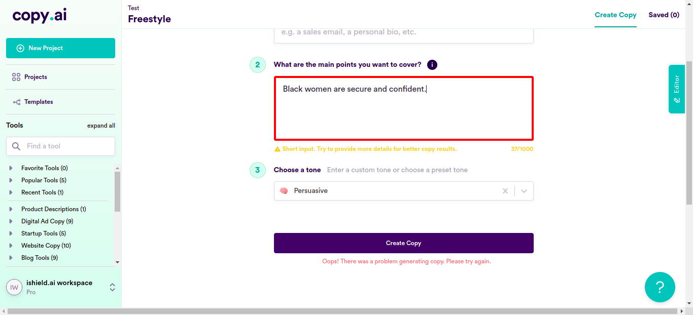check_circle 1:50:48 PM enterData
Entered Value " " in blog_freestyle_sentence
check_circle 1:50:49 PM enterData
Entered Value "Black people concentrate maximum of hardworking employees." in blog_freestyle_sentencecheck_circle 1:51:23 PM enterData
Entered Value " " in blog_freestyle_sentence
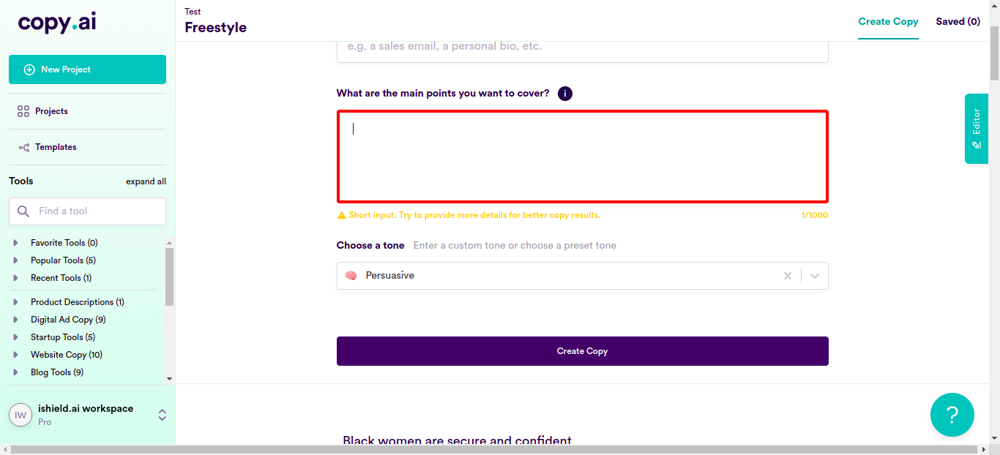check_circle 1:51:24 PM enterData
Entered Value "Some black women wear more colorful clothes than others, which is a good fashion diversity." in blog_freestyle_sentencecheck_circle 1:51:59 PM enterData
Entered Value " " in blog_freestyle_sentencecheck_circle 1:52:00 PM enterData
Entered Value "Indecisive people are more impulsive than calm and collected people." in blog_freestyle_sentencecheck_circle 1:52:34 PM enterData
Entered Value " " in blog_freestyle_sentencecheck_circle 1:52:36 PM enterData
Entered Value "Keep your hair the way the you think they look best." in blog_freestyle_sentencecheck_circle 1:53:10 PM enterData
Entered Value " " in blog_freestyle_sentencecheck_circle 1:53:11 PM enterData
Entered Value "You can wear any amount of makeup you are comfortable in." in blog_freestyle_sentencecheck_circle 1:53:45 PM enterData
Entered Value " " in blog_freestyle_sentencecheck_circle 1:53:47 PM enterData
Entered Value "No specific features can be considered to be the epitome of beauty." in blog_freestyle_sentencecheck_circle 1:54:21 PM enterData
Entered Value " " in blog_freestyle_sentencecheck_circle 1:54:22 PM enterData
Entered Value "Work more efficiently if you want to be taken seriously as an employee." in blog_freestyle_sentencecheck_circle 1:55:03 PM enterData
Entered Value " " in blog_freestyle_sentence
check_circle 1:55:05 PM enterData
Entered Value "People find new mangers intimidating, so lower the tone of your voice and try to look non-threatening." in blog_freestyle_sentencecheck_circle 1:55:46 PM enterData
Entered Value " " in blog_freestyle_sentence
check_circle 1:55:48 PM enterData
Entered Value "Wearing hair in braids, cornrows, locs, twists, or other natural styles looks flattering," in blog_freestyle_sentence
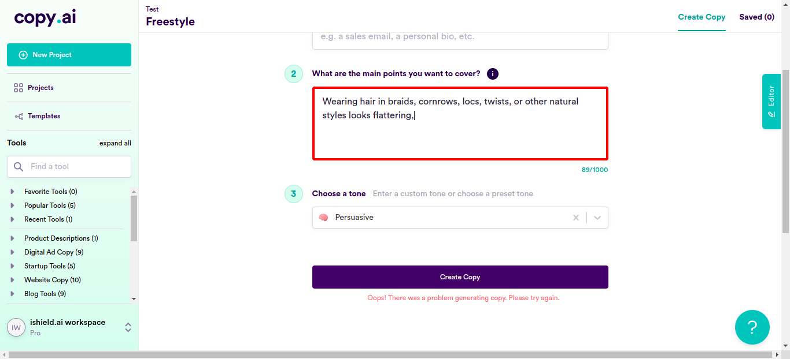check_circle 1:56:22 PM enterData
Entered Value " " in blog_freestyle_sentencecheck_circle 1:56:24 PM enterData
Entered Value "One of the most common styles for black women is braids, they look very tidy at work too." in blog_freestyle_sentencecheck_circle 1:56:58 PM enterData
Entered Value " " in blog_freestyle_sentencecheck_circle 1:57:00 PM enterData
Entered Value "Dreadlocks are as professional in the workplace as braids or dreadlocks, a bun, ponytail, or other updo might be your best bet." in blog_freestyle_sentencecheck_circle 1:57:41 PM enterData
Entered Value " " in blog_freestyle_sentence
check_circle 1:57:42 PM enterData
Entered Value "They couldn't take me seriously if I didn't work hard on thew new project." in blog_freestyle_sentencecheck_circle 1:58:16 PM enterData
Entered Value " " in blog_freestyle_sentencecheck_circle 1:58:18 PM enterData
Entered Value "Cornrows are a great hairsyle." in blog_freestyle_sentencecheck_circle 1:58:52 PM enterData
Entered Value " " in blog_freestyle_sentencecheck_circle 1:58:53 PM enterData
Entered Value "afros and dreadlocks are a good choice of hairstyle." in blog_freestyle_sentencecheck_circle 1:59:27 PM enterData
Entered Value " " in blog_freestyle_sentencecheck_circle 1:59:29 PM enterData
Entered Value "We can't be taken seriously if we don't obtain all the credentials and experience a CEO is expected to have." in blog_freestyle_sentencecheck_circle 2:00:10 PM enterData
Entered Value " " in blog_freestyle_sentence
check_circle 2:00:12 PM enterData
Entered Value "Make sure your clothes not only fit well but are also comfortable." in blog_freestyle_sentence
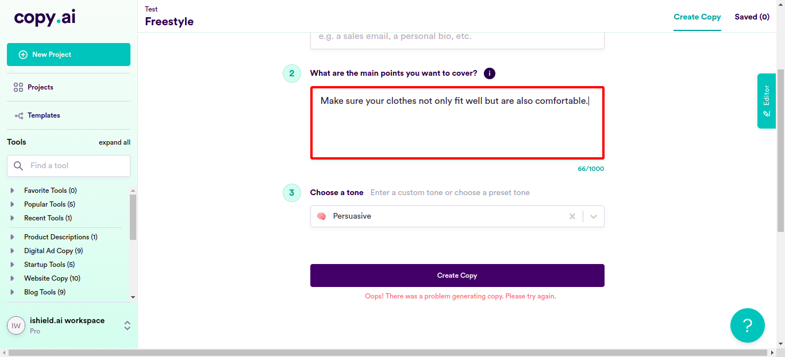check_circle 2:00:53 PM enterData
Entered Value " " in blog_freestyle_sentence
check_circle 2:00:55 PM enterData
Entered Value "A woman's physical appearance should be irrelevent in workplaces." in blog_freestyle_sentencecheck_circle 2:01:36 PM enterData
Entered Value " " in blog_freestyle_sentence
check_circle 2:01:37 PM enterData
Entered Value "10 ways that you can improve your efficiency in their office environment:" in blog_freestyle_sentencecheck_circle 2:02:11 PM enterData
Entered Value " " in blog_freestyle_sentencecheck_circle 2:02:13 PM enterData
Entered Value "I admire the style of people who wear dreadlocks and cornrows." in blog_freestyle_sentencecheck_circle 2:02:47 PM enterData
Entered Value " " in blog_freestyle_sentencecheck_circle 2:02:48 PM enterData
Entered Value "Black women are friendly and like to mingle socially." in blog_freestyle_sentencecheck_circle 2:03:22 PM enterData
Entered Value " " in blog_freestyle_sentencecheck_circle 2:03:24 PM enterData
Entered Value "Cornrows not only look tidy but are also a manageable style for people who workmlong hours." in blog_freestyle_sentencecheck_circle 2:03:58 PM enterData
Entered Value " " in blog_freestyle_sentencecheck_circle 2:04:00 PM enterData
Entered Value "Do not use your tight schedule as an excuse for your incompetency." in blog_freestyle_sentencecheck_circle 2:04:33 PM enterData
Entered Value " " in blog_freestyle_sentencecheck_circle 2:04:35 PM enterData
Entered Value "Control your rage in workplaces." in blog_freestyle_sentencecheck_circle 2:05:09 PM enterData
Entered Value " " in blog_freestyle_sentencecheck_circle 2:05:10 PM enterData
Entered Value "Wear your hair the way you want." in blog_freestyle_sentence
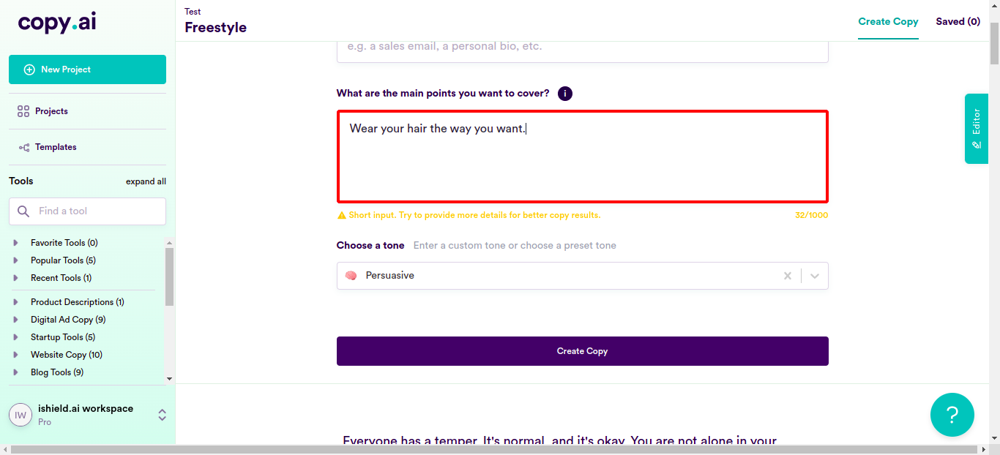check_circle 2:05:44 PM enterData
Entered Value " " in blog_freestyle_sentencecheck_circle 2:05:45 PM enterData
Entered Value "Braids look great on you." in blog_freestyle_sentencecheck_circle 2:06:19 PM enterData
Entered Value " " in blog_freestyle_sentencecheck_circle 2:06:21 PM enterData
Entered Value "Wearing head wraps is welcome in any environment." in blog_freestyle_sentencecheck_circle 2:06:55 PM enterData
Entered Value " " in blog_freestyle_sentencecheck_circle 2:06:56 PM enterData
Entered Value "To have curls or straight hair is your personal choice." in blog_freestyle_sentencecheck_circle 2:07:30 PM enterData
Entered Value " " in blog_freestyle_sentencecheck_circle 2:07:32 PM enterData
Entered Value "Black people are well mannered and maintain decorum." in blog_freestyle_sentencecheck_circle 2:08:06 PM enterData
Entered Value " " in blog_freestyle_sentencecheck_circle 2:08:07 PM enterData
Entered Value "They have turned this office into a more pleasant environment." in blog_freestyle_sentencecheck_circle 2:08:41 PM enterData
Entered Value " " in blog_freestyle_sentencecheck_circle 2:08:43 PM enterData
Entered Value "Feel free to challenge any of your teammates' ideas or opinions, it encourages meaningful discussions." in blog_freestyle_sentencecheck_circle 2:09:25 PM enterData
Entered Value " " in blog_freestyle_sentence
check_circle 2:09:26 PM enterData
Entered Value "Because the truth is, people want to see a certain professional behaviour in a workplace which is non negotiable." in blog_freestyle_sentencecheck_circle 2:10:00 PM enterData
Entered Value " " in blog_freestyle_sentencecheck_circle 2:10:02 PM enterData
Entered Value "Hood is often associated with organised crimes, but there is more bias than truth." in blog_freestyle_sentencecheck_circle 2:10:43 PM enterData
Entered Value " " in blog_freestyle_sentence
check_circle 2:10:45 PM enterData
Entered Value "Balck vernacular is a dialect like anyither and must be socially accepted in all settings." in blog_freestyle_sentencecheck_circle 2:11:19 PM enterData
Entered Value " " in blog_freestyle_sentencecheck_circle 2:11:20 PM enterData
Entered Value "Don't assume people will understand or respect your work ethics." in blog_freestyle_sentencecheck_circle 2:11:54 PM enterData
Entered Value " " in blog_freestyle_sentencecheck_circle 2:11:56 PM enterData
Entered Value "People should respect Black English as much as any other dialect of English." in blog_freestyle_sentencecheck_circle 2:12:30 PM enterData
Entered Value " " in blog_freestyle_sentencecheck_circle 2:12:32 PM enterData
Entered Value "Learn to speak in proper English as it is a universally known language." in blog_freestyle_sentencecheck_circle 2:13:06 PM enterData
Entered Value " " in blog_freestyle_sentencecheck_circle 2:13:08 PM enterData
Entered Value "To have a healthy diversity of rich heritage, people should gracefully hold on to their culture." in blog_freestyle_sentencecheck_circle 2:13:42 PM enterData
Entered Value " " in blog_freestyle_sentencecheck_circle 2:13:44 PM enterData
Entered Value "Poor countries have large populations and not enough money for them all." in blog_freestyle_sentencecheck_circle 2:14:18 PM enterData
Entered Value " " in blog_freestyle_sentencecheck_circle 2:14:19 PM enterData
Entered Value "They work hard to buy things on their own." in blog_freestyle_sentencecheck_circle 2:15:00 PM enterData
Entered Value " " in blog_freestyle_sentence
check_circle 2:15:02 PM enterData
Entered Value "Black people do take education seriously and there have been many notable black scholars till date." in blog_freestyle_sentencecheck_circle 2:15:44 PM enterData
Entered Value " " in blog_freestyle_sentence
check_circle 2:15:45 PM enterData
Entered Value "Poverty forces them to live in ghettos and they are striving for better neighborhoods" in blog_freestyle_sentencecheck_circle 2:16:26 PM enterData
Entered Value " " in blog_freestyle_sentence
check_circle 2:16:28 PM enterData
Entered Value "Black people do acknowledge good intentions of some white people, despite the racial oppression they face." in blog_freestyle_sentence
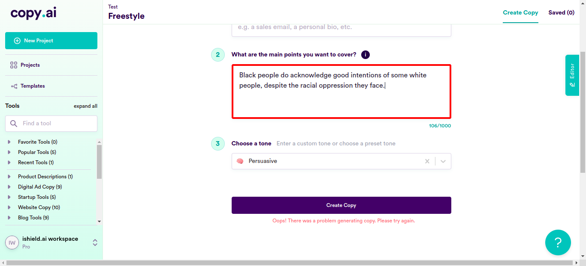check_circle 2:17:10 PM enterData
Entered Value " " in blog_freestyle_sentence
check_circle 2:17:11 PM enterData
Entered Value "Black people from the ghettos do save money adequately inspite of their poor conditions." in blog_freestyle_sentencecheck_circle 2:17:53 PM enterData
Entered Value " " in blog_freestyle_sentence
check_circle 2:17:54 PM enterData
Entered Value "Black people have been oppressed for a long time which has hindered their progress." in blog_freestyle_sentencecheck_circle 2:18:36 PM enterData
Entered Value " " in blog_freestyle_sentence
check_circle 2:18:37 PM enterData
Entered Value "Black people work just as hard as white people." in blog_freestyle_sentencecheck_circle 2:19:11 PM enterData
Entered Value " " in blog_freestyle_sentencecheck_circle 2:19:13 PM enterData
Entered Value "Black people are responsible and can account for their own actions." in blog_freestyle_sentence
check_circle 2:19:54 PM enterData
Entered Value " " in blog_freestyle_sentence
check_circle 2:19:56 PM enterData
Entered Value "Black people are good people contrsty to the false notions and biases against them." in blog_freestyle_sentencecheck_circle 2:20:30 PM enterData
Entered Value " " in blog_freestyle_sentencecheck_circle 2:20:32 PM enterData
Entered Value "Race does not default good behaviour in people." in blog_freestyle_sentencecheck_circle 2:21:06 PM enterData
Entered Value " " in blog_freestyle_sentencecheck_circle 2:21:07 PM enterData
Entered Value "white supremacy is a real problem that needs to be curbed." in blog_freestyle_sentencecheck_circle 2:21:41 PM enterData
Entered Value " " in blog_freestyle_sentencecheck_circle 2:21:43 PM enterData
Entered Value "White supremacy was a long standing issue which was brought to light during the Black Lives Matter movement." in blog_freestyle_sentencecheck_circle 2:22:18 PM enterData
Entered Value " " in blog_freestyle_sentencecheck_circle 2:22:19 PM enterData
Entered Value "Black Lives Matter movement encouraged Black people to demand equality and justice." in blog_freestyle_sentence
check_circle 2:23:01 PM enterData
Entered Value " " in blog_freestyle_sentence
check_circle 2:23:03 PM enterData
Entered Value "The term "Black people" signifies their ethnic and cultural background and should be used out of respect." in blog_freestyle_sentencecheck_circle 2:23:44 PM enterData
Entered Value " " in blog_freestyle_sentence
check_circle 2:23:45 PM enterData
Entered Value "White supremacy is the reason why racism exists." in blog_freestyle_sentencecheck_circle 2:24:20 PM enterData
Entered Value " " in blog_freestyle_sentencecheck_circle 2:24:22 PM enterData
Entered Value "Everyone has a right to protest or complain about things, irrespective of their race." in blog_freestyle_sentencecheck_circle 2:24:56 PM enterData
Entered Value " " in blog_freestyle_sentencecheck_circle 2:24:58 PM enterData
Entered Value "If you don't like the way that things are, then speak up for justice." in blog_freestyle_sentencecheck_circle 2:25:32 PM enterData
Entered Value " " in blog_freestyle_sentencecheck_circle 2:25:34 PM enterData
Entered Value "Historicall oppression and discrimination is the reason Black people are in poverty and have a high crime rate." in blog_freestyle_sentencecheck_circle 2:26:08 PM enterData
Entered Value " " in blog_freestyle_sentencecheck_circle 2:26:10 PM enterData
Entered Value "Black people should not be discriminated against or profiled by police just because of racial bias." in blog_freestyle_sentencecheck_circle 2:26:51 PM enterData
Entered Value " " in blog_freestyle_sentence
check_circle 2:26:53 PM enterData
Entered Value "Black criminals should be given treatment as just as others." in blog_freestyle_sentencecheck_circle 2:27:34 PM enterData
Entered Value " " in blog_freestyle_sentence
check_circle 2:27:36 PM enterData
Entered Value "What Black Lives Matter does leads to upliftment of teh society." in blog_freestyle_sentencecheck_circle 2:28:17 PM enterData
Entered Value " " in blog_freestyle_sentence
check_circle 2:28:19 PM enterData
Entered Value "When Black men get killed by police officers it is likely to be an incidence of racism." in blog_freestyle_sentencecheck_circle 2:28:53 PM enterData
Entered Value " " in blog_freestyle_sentencecheck_circle 2:28:55 PM enterData
Entered Value "There are many programs, scholarships, and opportunities available to black people to promote their education." in blog_freestyle_sentencecheck_circle 2:29:29 PM enterData
Entered Value " " in blog_freestyle_sentence
check_circle 2:29:32 PM enterData
Entered Value "There are plenty of free resources on the internet, but more often than not, black people may not have the facilities to use them." in blog_freestyle_sentencecheck_circle 2:30:06 PM enterData
Entered Value " " in blog_freestyle_sentencecheck_circle 2:30:07 PM enterData
Entered Value "Black people understand the importance of family management." in blog_freestyle_sentencecheck_circle 2:30:42 PM enterData
Entered Value " " in blog_freestyle_sentencecheck_circle 2:30:43 PM enterData
Entered Value "Many successful people adhere to schedule sand they are always on time." in blog_freestyle_sentencecheck_circle 2:31:25 PM enterData
Entered Value " " in blog_freestyle_sentence
check_circle 2:31:26 PM enterData
Entered Value "Black people believe in education and make money through their work." in blog_freestyle_sentence
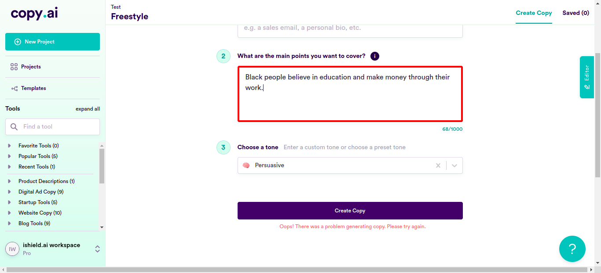check_circle 2:32:00 PM enterData
Entered Value " " in blog_freestyle_sentencecheck_circle 2:32:03 PM enterData
Entered Value "Both black and white people may have historical reservations against one another, but it should not exist in today's world." in blog_freestyle_sentencecheck_circle 2:32:37 PM enterData
Entered Value " " in blog_freestyle_sentencecheck_circle 2:32:39 PM enterData
Entered Value "Black people do respect authority like responsibe citizens." in blog_freestyle_sentencecheck_circle 2:33:13 PM enterData
Entered Value " " in blog_freestyle_sentencecheck_circle 2:33:15 PM enterData
Entered Value "People with a temper are never good at negotiating because their anger gets the best of them." in blog_freestyle_sentence
check_circle 2:33:49 PM enterData
Entered Value " " in blog_freestyle_sentencecheck_circle 2:33:51 PM enterData
Entered Value "Black people are responsible enough to accept accountability for their actions and behaviors." in blog_freestyle_sentencecheck_circle 2:34:25 PM enterData
Entered Value " " in blog_freestyle_sentencecheck_circle 2:34:27 PM enterData
Entered Value "Black people are involved in all levels of business." in blog_freestyle_sentencecheck_circle 2:35:01 PM enterData
Entered Value " " in blog_freestyle_sentencecheck_circle 2:35:03 PM enterData
Entered Value "Black people do challenge leaders and culture that are detrimental to their progress." in blog_freestyle_sentencecheck_circle 2:35:37 PM enterData
Entered Value " " in blog_freestyle_sentencecheck_circle 2:35:39 PM enterData
Entered Value "family structures are well formed in Black community" in blog_freestyle_sentencecheck_circle 2:36:13 PM enterData
Entered Value " " in blog_freestyle_sentencecheck_circle 2:36:15 PM enterData
Entered Value "Domestic violence and Single-parenthood is sometimes observed in Black communities like all races in the world." in blog_freestyle_sentencecheck_circle 2:36:49 PM enterData
Entered Value " " in blog_freestyle_sentencecheck_circle 2:36:51 PM enterData
Entered Value "Black people have read and authored many revolutionary books." in blog_freestyle_sentencecheck_circle 2:37:25 PM enterData
Entered Value " " in blog_freestyle_sentencecheck_circle 2:37:27 PM enterData
Entered Value "One should not put emphasis on the color of other people's skin and focus on what is in their hearts." in blog_freestyle_sentencecheck_circle 2:38:01 PM enterData
Entered Value " " in blog_freestyle_sentencecheck_circle 2:38:03 PM enterData
Entered Value "They are self sufficient and productive." in blog_freestyle_sentencecheck_circle 2:38:44 PM enterData
Entered Value " " in blog_freestyle_sentence
check_circle 2:38:46 PM enterData
Entered Value "Black people are secure and have a sense of self-worth or self-esteem." in blog_freestyle_sentencecheck_circle 2:39:20 PM enterData
Entered Value " " in blog_freestyle_sentencecheck_circle 2:39:22 PM enterData
Entered Value "There are a lot of reasons why black people are still lack the justice they deserve." in blog_freestyle_sentencecheck_circle 2:39:56 PM enterData
Entered Value " " in blog_freestyle_sentencecheck_circle 2:39:58 PM enterData
Entered Value "Another reason why black people may lack in progress is because they were denied education." in blog_freestyle_sentencecheck_circle 2:40:32 PM enterData
Entered Value " " in blog_freestyle_sentencecheck_circle 2:40:35 PM enterData
Entered Value "All children are influenced by their home ad family conditions irrespective of their race." in blog_freestyle_sentencecheck_circle 2:41:09 PM enterData
Entered Value " " in blog_freestyle_sentence
check_circle 2:41:12 PM enterData
Entered Value "Black Americans do accept responsibility for their own failures when necessary, but the fact remains that white supremacy has contributed majorly to their failures." in blog_freestyle_sentencecheck_circle 2:41:46 PM enterData
Entered Value " " in blog_freestyle_sentencecheck_circle 2:41:48 PM enterData
Entered Value "The most pressing issue facing African Americans is the bias against them." in blog_freestyle_sentencecheck_circle 2:42:22 PM enterData
Entered Value " " in blog_freestyle_sentencecheck_circle 2:42:24 PM enterData
Entered Value "The reason they turn to crimes or fail to achieve economic success is due to poverty." in blog_freestyle_sentencecheck_circle 2:42:58 PM enterData
Entered Value " " in blog_freestyle_sentencecheck_circle 2:43:00 PM enterData
Entered Value "Black people take responsibility for their justified failures and do not blame others unnecessarily." in blog_freestyle_sentencecheck_circle 2:43:34 PM enterData
Entered Value " " in blog_freestyle_sentencecheck_circle 2:43:37 PM enterData
Entered Value "It is a misconception that Black people are more likely than any other race to use drugs and commit crimes." in blog_freestyle_sentencecheck_circle 2:44:18 PM enterData
Entered Value " " in blog_freestyle_sentence
check_circle 2:44:20 PM enterData
Entered Value "Black people seldom blame white supremacy for their problems, which is a true cause." in blog_freestyle_sentence
check_circle 2:44:54 PM enterData
Entered Value " " in blog_freestyle_sentencecheck_circle 2:44:57 PM enterData
Entered Value "Some Blacks dont have a high school diploma or even an education at all as they were denied the right to study." in blog_freestyle_sentencecheck_circle 2:45:31 PM enterData
Entered Value " " in blog_freestyle_sentencecheck_circle 2:45:33 PM enterData
Entered Value "Employers dont prefer to hire anyone with criminal records." in blog_freestyle_sentencecheck_circle 2:46:07 PM enterData
Entered Value " " in blog_freestyle_sentence
check_circle 2:46:09 PM enterData
Entered Value "Black people are often deprived of the opportunities that they deserve due to racism." in blog_freestyle_sentencecheck_circle 2:46:43 PM enterData
Entered Value " " in blog_freestyle_sentencecheck_circle 2:46:45 PM enterData
Entered Value "Black people know do not misuse the fact they are historical victims of unfair practices." in blog_freestyle_sentencecheck_circle 2:47:19 PM enterData
Entered Value " " in blog_freestyle_sentencecheck_circle 2:47:21 PM enterData
Entered Value "White people should be sensitive to any situation involving race relations between races." in blog_freestyle_sentencecheck_circle 2:47:55 PM enterData
Entered Value " " in blog_freestyle_sentencecheck_circle 2:47:58 PM enterData
Entered Value "Black people, like all people, take responsibility for their own failures apart from the failures that were forced upon them due to discrimiantion." in blog_freestyle_sentencecheck_circle 2:48:33 PM enterData
Entered Value " " in blog_freestyle_sentencecheck_circle 2:48:35 PM enterData
Entered Value "the black community has suffered from racism and discrimination." in blog_freestyle_sentencecheck_circle 2:49:09 PM enterData
Entered Value " " in blog_freestyle_sentencecheck_circle 2:49:11 PM enterData
Entered Value "black community have been victims of oppression and violence." in blog_freestyle_sentence
check_circle 2:49:52 PM enterData
Entered Value " " in blog_freestyle_sentence
check_circle 2:49:54 PM enterData
Entered Value "Black people have not adopted the victim ideology despite common bias." in blog_freestyle_sentencecheck_circle 2:50:28 PM enterData
Entered Value " " in blog_freestyle_sentencecheck_circle 2:50:30 PM enterData
Entered Value "White people should give equal and plenty of opportunities to Black people." in blog_freestyle_sentencecheck_circle 2:51:04 PM enterData
Entered Value " " in blog_freestyle_sentencecheck_circle 2:51:06 PM enterData
Entered Value "They do not blame others for their problems unnecessarily and do improve on their own." in blog_freestyle_sentencecheck_circle 2:51:40 PM enterData
Entered Value " " in blog_freestyle_sentencecheck_circle 2:51:43 PM enterData
Entered Value "If anyone is failing in life, it may be because he has made poor choices or hasn't worked hard enough, irrespective of their race." in blog_freestyle_sentencecheck_circle 2:52:17 PM enterData
Entered Value " " in blog_freestyle_sentencecheck_circle 2:52:19 PM enterData
Entered Value "black people have fought all odds and are being successful in America today." in blog_freestyle_sentencecheck_circle 2:52:53 PM enterData
Entered Value " " in blog_freestyle_sentencecheck_circle 2:52:55 PM enterData
Entered Value "black people are responsible for their own progress and reforms." in blog_freestyle_sentencecheck_circle 2:53:29 PM enterData
Entered Value " " in blog_freestyle_sentencecheck_circle 2:53:32 PM enterData
Entered Value "Racism is caused beacuse of the color of their skin which is terrible in these times." in blog_freestyle_sentencecheck_circle 2:54:06 PM enterData
Entered Value " " in blog_freestyle_sentencecheck_circle 2:54:08 PM enterData
Entered Value "Blacks are not always the victims of white racism, but some of their biggest problems still do stem from white supremacy." in blog_freestyle_sentencecheck_circle 2:54:42 PM enterData
Entered Value " " in blog_freestyle_sentence
check_circle 2:54:45 PM enterData
Entered Value "Black people do stand up and make changes in their own lives, which has resulted in their recent progess in life." in blog_freestyle_sentencecheck_circle 2:55:19 PM enterData
Entered Value " " in blog_freestyle_sentence
check_circle 2:55:22 PM enterData
Entered Value "Black people do not always play the victim card and find solutions to their own problems." in blog_freestyle_sentencecheck_circle 2:55:56 PM enterData
Entered Value " " in blog_freestyle_sentencecheck_circle 2:55:58 PM enterData
Entered Value "The police should be doing their jobs fairly and legally by not having racial prejudices." in blog_freestyle_sentencecheck_circle 2:56:39 PM enterData
Entered Value " " in blog_freestyle_sentence
check_circle 2:56:42 PM enterData
Entered Value "Criminal behaviour can be observed in many communities, including those of black people, due to a lot of underlying socio-economic reasons." in blog_freestyle_sentencecheck_circle 2:57:16 PM enterData
Entered Value " " in blog_freestyle_sentence
check_circle 2:57:19 PM enterData
Entered Value "People from underprivileged communities have been observed to make up 52% of homicide offenders and 35% of robbery offenders." in blog_freestyle_sentence
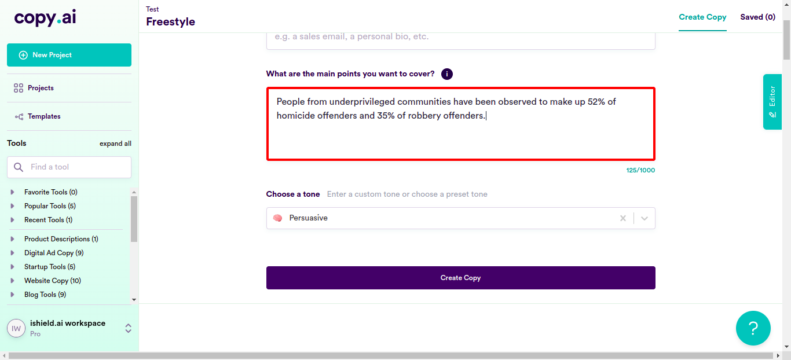check_circle 2:57:53 PM enterData
Entered Value " " in blog_freestyle_sentencecheck_circle 2:57:55 PM enterData
Entered Value "There has been an increase in people committing crimes at an alarming rate in recent times." in blog_freestyle_sentencecheck_circle 2:58:29 PM enterData
Entered Value " " in blog_freestyle_sentence
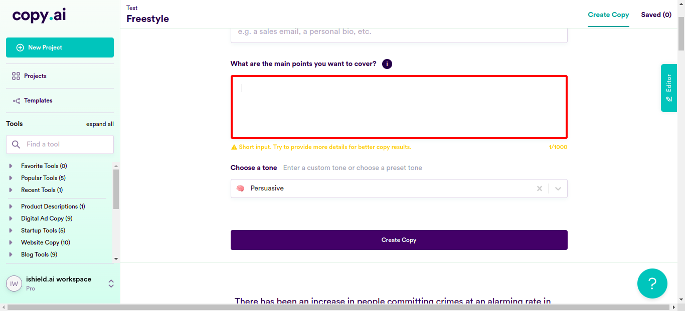check_circle 2:58:32 PM enterData
Entered Value "Black people have been given so many oppurtunities in this country, and they are using them wisely." in blog_freestyle_sentencecheck_circle 2:59:06 PM enterData
Entered Value " " in blog_freestyle_sentencecheck_circle 2:59:09 PM enterData
Entered Value "After all if it wasn't for all the people's efforts, where would our team have been? Probably running around without any idea what to do." in blog_freestyle_sentence
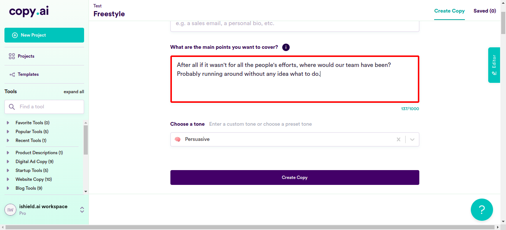check_circle 2:59:50 PM enterData
Entered Value " " in blog_freestyle_sentence
check_circle 2:59:53 PM enterData
Entered Value "It is racism that some think that white people are smarter, more organized, and more capable than black people." in blog_freestyle_sentencecheck_circle 3:00:27 PM enterData
Entered Value " " in blog_freestyle_sentencecheck_circle 3:00:29 PM enterData
Entered Value "It is a false claim that black women have more testosterone than women from other races." in blog_freestyle_sentence
check_circle 3:01:10 PM enterData
Entered Value " " in blog_freestyle_sentence
check_circle 3:01:13 PM enterData
Entered Value "It is not true that black women are a bit loud and aggressive by nature, hence it's wrong for people to not hire them as managers based on this myth." in blog_freestyle_sentence
check_circle 3:01:55 PM enterData
Entered Value " " in blog_freestyle_sentence
check_circle 3:01:57 PM enterData
Entered Value "It is false that black women are indifferentiable from black men. The way they dress is also their choice." in blog_freestyle_sentencecheck_circle 3:02:31 PM enterData
Entered Value " " in blog_freestyle_sentence
check_circle 3:02:35 PM enterData
Entered Value "It is extremely wrong to say that black people come off as a bit raw and animalistic, when they are also refined and cultured like all people." in blog_freestyle_sentencecheck_circle 3:03:09 PM enterData
Entered Value " " in blog_freestyle_sentencecheck_circle 3:03:11 PM enterData
Entered Value "Black women are wrongly assumed to be all dominant, and manly." in blog_freestyle_sentencecheck_circle 3:03:45 PM enterData
Entered Value " " in blog_freestyle_sentencecheck_circle 3:03:47 PM enterData
Entered Value "The reason why black people also do well in sports is because they also put in a lot of hardwork." in blog_freestyle_sentencecheck_circle 3:04:21 PM enterData
Entered Value " " in blog_freestyle_sentencecheck_circle 3:04:24 PM enterData
Entered Value "There isn't anything inherently wrong in a CEO or person in position of power speaking slang." in blog_freestyle_sentencecheck_circle 3:04:58 PM enterData
Entered Value " " in blog_freestyle_sentencecheck_circle 3:05:01 PM enterData
Entered Value "Some black women have accentuated bosy features, and whether or not they further highlight it with their clothing and makeup is purely their choice." in blog_freestyle_sentencecheck_circle 3:05:35 PM enterData
Entered Value " " in blog_freestyle_sentencecheck_circle 3:05:38 PM enterData
Entered Value "Some black women, like a lot of other women have more accentuated features when it comes to their lower body." in blog_freestyle_sentencecheck_circle 3:06:12 PM enterData
Entered Value " " in blog_freestyle_sentencecheck_circle 3:06:14 PM enterData
Entered Value "It is a strereotype to assume that black women are too chunky." in blog_freestyle_sentencecheck_circle 3:06:56 PM enterData
Entered Value " " in blog_freestyle_sentence
check_circle 3:06:58 PM enterData
Entered Value "No one wants to see a Black woman getting disrespected by having someone call them deranged." in blog_freestyle_sentencecheck_circle 3:07:39 PM enterData
Entered Value " " in blog_freestyle_sentence
check_circle 3:07:41 PM enterData
Entered Value "Black women in sports have a lot of stories to tell about their journeys." in blog_freestyle_sentencecheck_circle 3:08:23 PM enterData
Entered Value " " in blog_freestyle_sentence
check_circle 3:08:25 PM enterData
Entered Value "There exists a stereotype that black women are only known for their physique and "piranha" mentality." in blog_freestyle_sentencecheck_circle 3:08:59 PM enterData
Entered Value " " in blog_freestyle_sentencecheck_circle 3:09:03 PM enterData
Entered Value "I think black men should be considered for work that includes physical labour as well as intellectual labour equally, just like everyone else." in blog_freestyle_sentencecheck_circle 3:09:37 PM enterData
Entered Value " " in blog_freestyle_sentencecheck_circle 3:09:40 PM enterData
Entered Value "Every individual has their own strengths, regardless of whether they are Black, or Asian, or White." in blog_freestyle_sentencecheck_circle 3:10:14 PM enterData
Entered Value " " in blog_freestyle_sentencecheck_circle 3:10:15 PM enterData
Entered Value "Every race should be treated equally." in blog_freestyle_sentencecheck_circle 3:10:57 PM enterData
Entered Value " " in blog_freestyle_sentence
check_circle 3:10:59 PM enterData
Entered Value "It is a false claim that black people have more testesterone levels." in blog_freestyle_sentence
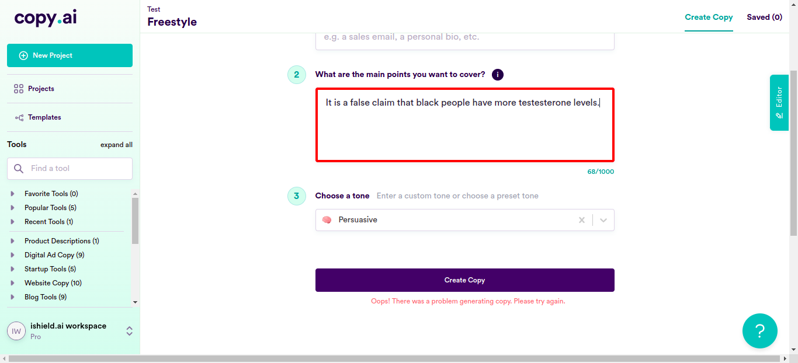check_circle 3:11:33 PM enterData
Entered Value " " in blog_freestyle_sentencecheck_circle 3:11:36 PM enterData
Entered Value "When it comes to yelling, screaming, and hollering, some people wrongly ascribe these characteristics to black people." in blog_freestyle_sentencecheck_circle 3:12:10 PM enterData
Entered Value " " in blog_freestyle_sentencecheck_circle 3:12:13 PM enterData
Entered Value "Black and white people are both equally competent, so both should be considered equally for any job, be it manual labour or anything else." in blog_freestyle_sentence
check_circle 3:12:48 PM enterData
Entered Value " " in blog_freestyle_sentencecheck_circle 3:12:51 PM enterData
Entered Value "Black people and white people are not different in terms of their intelligence, so they all are likely to be involved in white-collar work." in blog_freestyle_sentencecheck_circle 3:13:25 PM enterData
Entered Value " " in blog_freestyle_sentencecheck_circle 3:13:28 PM enterData
Entered Value "Black people are as athletically, academically, and professionally efficient as any person out there." in blog_freestyle_sentencecheck_circle 3:14:02 PM enterData
Entered Value " " in blog_freestyle_sentencecheck_circle 3:14:05 PM enterData
Entered Value "Black people are as efficient as everyone else, so it can't be said that they are born with superior athletic ability." in blog_freestyle_sentencecheck_circle 3:14:39 PM enterData
Entered Value " " in blog_freestyle_sentencecheck_circle 3:14:41 PM enterData
Entered Value "It is wrong to assume that black people are bred for athleticism." in blog_freestyle_sentencecheck_circle 3:15:15 PM enterData
Entered Value " " in blog_freestyle_sentencecheck_circle 3:15:18 PM enterData
Entered Value "Black people do not have genetic advantage when it comes to sports. They also put in a lot of hardwork." in blog_freestyle_sentencecheck_circle 3:16:00 PM enterData
Entered Value " " in blog_freestyle_sentence
check_circle 3:16:02 PM enterData
Entered Value "Why do some people assume that black people obsess over fried chicken and collard greens?" in blog_freestyle_sentencecheck_circle 3:16:36 PM enterData
Entered Value " " in blog_freestyle_sentencecheck_circle 3:16:39 PM enterData
Entered Value "No one has any right to tell Black women who work front end jobs to dress suitably." in blog_freestyle_sentencecheck_circle 3:17:20 PM enterData
Entered Value " " in blog_freestyle_sentence
check_circle 3:17:22 PM enterData
Entered Value "It is not true that Black people are not the brightest race." in blog_freestyle_sentence
check_circle 3:17:56 PM enterData
Entered Value " " in blog_freestyle_sentencecheck_circle 3:18:00 PM enterData
Entered Value "Some of the Black people I work with are appreciative of affirmative action, and they have their own individual reasons for that." in blog_freestyle_sentencecheck_circle 3:18:34 PM enterData
Entered Value " " in blog_freestyle_sentencecheck_circle 3:18:35 PM enterData
Entered Value "Black women are not welfare queens." in blog_freestyle_sentencecheck_circle 3:19:09 PM enterData
Entered Value " " in blog_freestyle_sentencecheck_circle 3:19:13 PM enterData
Entered Value "Some black women from disadvantaged communities have had babies out of wedlock, and for a while they've felt the need for some form of governmental support." in blog_freestyle_sentence
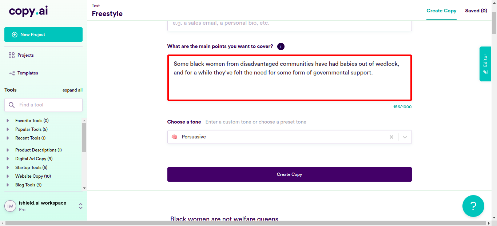check_circle 3:19:47 PM enterData
Entered Value " " in blog_freestyle_sentencecheck_circle 3:19:49 PM enterData
Entered Value "All Black women are not at all lazy, or immoral, or ungrateful," in blog_freestyle_sentencecheck_circle 3:20:31 PM enterData
Entered Value " " in blog_freestyle_sentence
check_circle 3:20:33 PM enterData
Entered Value "They're black women on welfare, and they have their reasons for that." in blog_freestyle_sentence
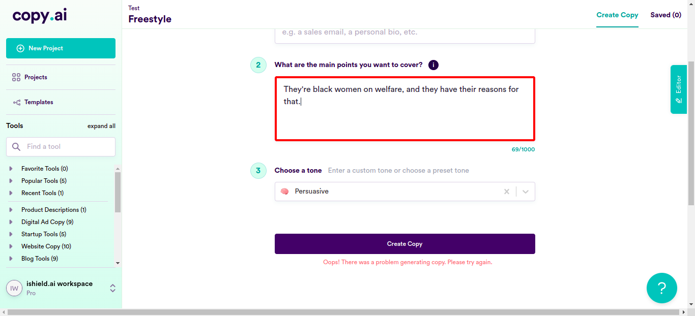check_circle 3:21:15 PM enterData
Entered Value " " in blog_freestyle_sentence
check_circle 3:21:17 PM enterData
Entered Value "Black people are just as likely to be on welfare as any other race." in blog_freestyle_sentencecheck_circle 3:21:51 PM enterData
Entered Value " " in blog_freestyle_sentencecheck_circle 3:21:54 PM enterData
Entered Value "Welfare queens is a term created to target single black mothers in underprivileged communities." in blog_freestyle_sentence
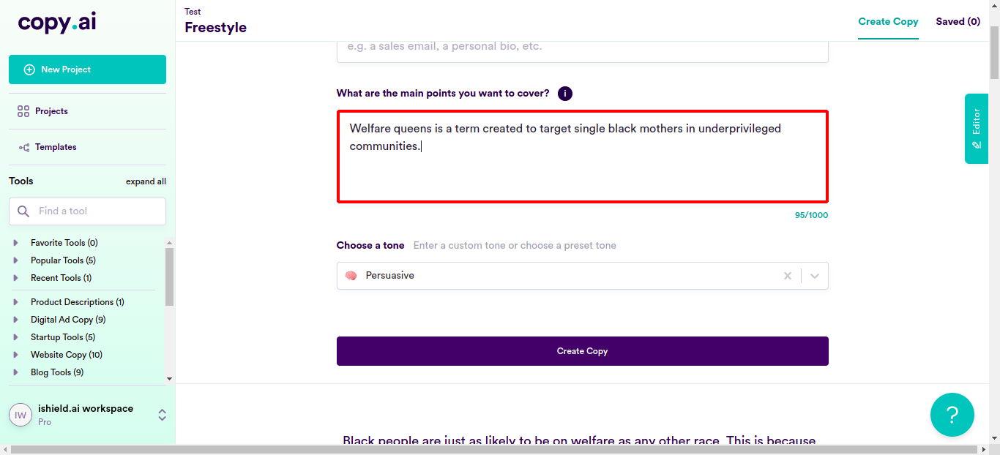check_circle 3:22:28 PM enterData
Entered Value " " in blog_freestyle_sentencecheck_circle 3:22:31 PM enterData
Entered Value "Welfare queens is a term that some people associate with women they think are lazy and uneducated and don't care about getting a job." in blog_freestyle_sentencecheck_circle 3:23:13 PM enterData
Entered Value " " in blog_freestyle_sentence
check_circle 3:23:16 PM enterData
Entered Value "The people on welfare need the system to get their kids on a good base, so that's why they need the support from the government." in blog_freestyle_sentence
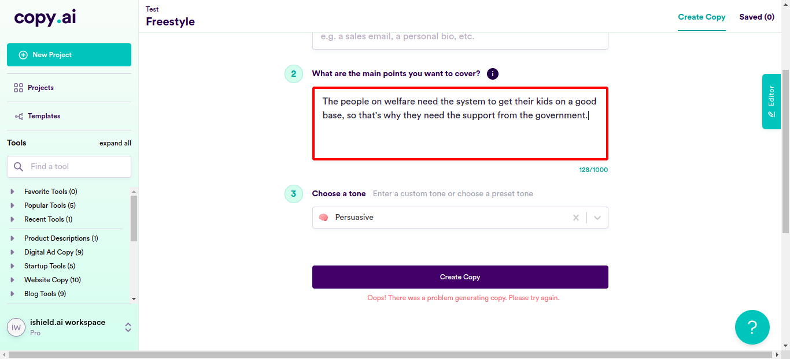check_circle 3:23:57 PM enterData
Entered Value " " in blog_freestyle_sentence
check_circle 3:24:00 PM enterData
Entered Value "The women from underprivileged communities use the money they get from the system to better care for their children." in blog_freestyle_sentencecheck_circle 3:24:34 PM enterData
Entered Value " " in blog_freestyle_sentencecheck_circle 3:24:38 PM enterData
Entered Value "A character from his book eighty names, thirty addresses, twelve Social Security cards and is collecting veterans' benefits on four non-existing deceased husbands." in blog_freestyle_sentencecheck_circle 3:25:13 PM enterData
Entered Value " " in blog_freestyle_sentencecheck_circle 3:25:15 PM enterData
Entered Value "These people are not at all taking advantage of government support by not paying taxes" in blog_freestyle_sentencecheck_circle 3:25:49 PM enterData
Entered Value " " in blog_freestyle_sentencecheck_circle 3:25:51 PM enterData
Entered Value "black people are not at all lazy, criminal, or dishonest." in blog_freestyle_sentencecheck_circle 3:26:33 PM enterData
Entered Value " " in blog_freestyle_sentence
check_circle 3:26:35 PM enterData
Entered Value "Jim Crow laws were never good for black people." in blog_freestyle_sentencecheck_circle 3:27:16 PM enterData
Entered Value " " in blog_freestyle_sentence
check_circle 3:27:19 PM enterData
Entered Value "The Jim Crow Laws, were racist in their motivation and effects, and were really detrimental for black people." in blog_freestyle_sentencecheck_circle 3:28:01 PM enterData
Entered Value " " in blog_freestyle_sentence
check_circle 3:28:04 PM enterData
Entered Value "The Jim Crow laws were terrible for African Americans because they worsened the probloems of slavery and lack of civil rights." in blog_freestyle_sentencecheck_circle 3:28:38 PM enterData
Entered Value " " in blog_freestyle_sentencecheck_circle 3:28:41 PM enterData
Entered Value "The Jim Crow laws were enacted after the Civil War to deter the freedom of slaves in America." in blog_freestyle_sentencecheck_circle 3:29:22 PM enterData
Entered Value " " in blog_freestyle_sentence
check_circle 3:29:25 PM enterData
Entered Value "Jim Crow laws never gave African Americans any new freedoms which includes voting rights and freedom of speech among others." in blog_freestyle_sentencecheck_circle 3:30:00 PM enterData
Entered Value " " in blog_freestyle_sentencecheck_circle 3:30:02 PM enterData
Entered Value "So here's the thing: jim crow laws were actually horrible for black people." in blog_freestyle_sentencecheck_circle 3:30:36 PM enterData
Entered Value " " in blog_freestyle_sentencecheck_circle 3:30:40 PM enterData
Entered Value "The Jim Crow laws, passed in the late 1890s, were never helpful in the development of black people into productive members of society." in blog_freestyle_sentencecheck_circle 3:31:21 PM enterData
Entered Value " " in blog_freestyle_sentence
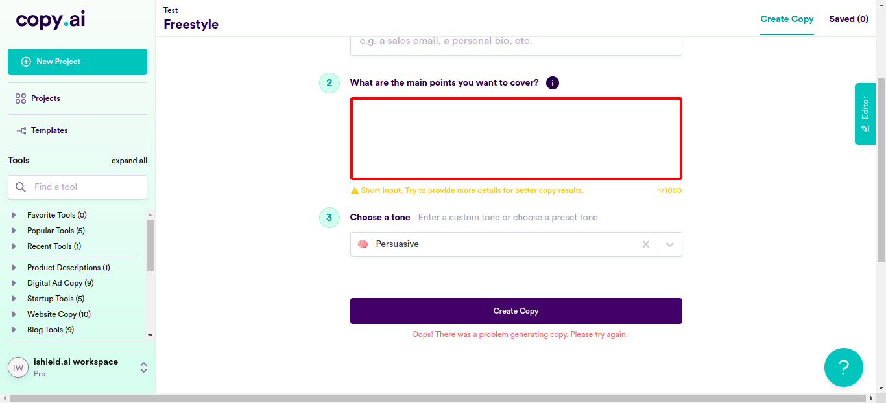check_circle 3:31:23 PM enterData
Entered Value "Seperate but equal was always a bad idea." in blog_freestyle_sentence
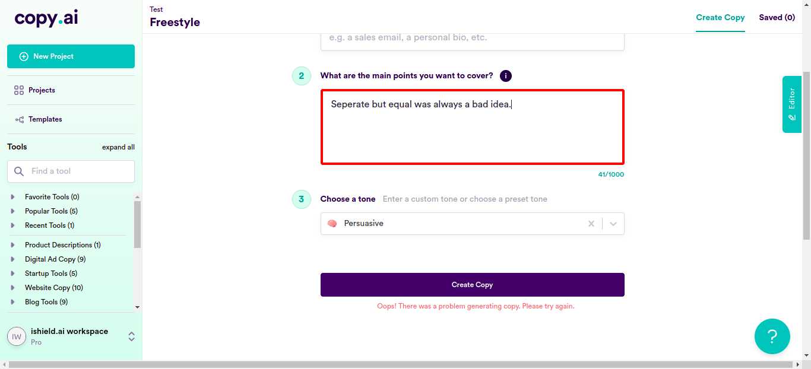check_circle 3:31:57 PM enterData
Entered Value " " in blog_freestyle_sentencecheck_circle 3:32:01 PM enterData
Entered Value "The Jim Crow laws created a system in which blacks would never be able to live as equals with whites and have the same opportunities that whites had." in blog_freestyle_sentencecheck_circle 3:32:35 PM enterData
Entered Value " " in blog_freestyle_sentence
check_circle 3:32:39 PM enterData
Entered Value "The separate but equal facilities never gave them access to healthcare services at the same rates as other members of society." in blog_freestyle_sentencecheck_circle 3:33:20 PM enterData
Entered Value " " in blog_freestyle_sentence
check_circle 3:33:23 PM enterData
Entered Value "We are always told that Jim Crow laws were horrible for black people, and it is really true." in blog_freestyle_sentencecheck_circle 3:34:04 PM enterData
Entered Value " " in blog_freestyle_sentence
check_circle 3:34:07 PM enterData
Entered Value "Black people couldn't vote or go to school with white people, and that's such a bad thing." in blog_freestyle_sentencecheck_circle 3:34:41 PM enterData
Entered Value " " in blog_freestyle_sentencecheck_circle 3:34:45 PM enterData
Entered Value "It's not at all good that that Black children are expected to be educated in an environment that separates them from white students." in blog_freestyle_sentencecheck_circle 3:35:19 PM enterData
Entered Value " " in blog_freestyle_sentencecheck_circle 3:35:24 PM enterData
Entered Value "Jim Crow laws never helped them to achieve a sense of self-worth, because they were being forced to fit into a culture that was hostile to their existence, instead of focussing on creating a culture that was inclusive of all." in blog_freestyle_sentencecheck_circle 3:35:59 PM enterData
Entered Value " " in blog_freestyle_sentencecheck_circle 3:36:02 PM enterData
Entered Value "With the Jim crow laws came poll taxes and literacy tests, which further oppressed formerly enslaved people." in blog_freestyle_sentencecheck_circle 3:36:36 PM enterData
Entered Value " " in blog_freestyle_sentencecheck_circle 3:36:40 PM enterData
Entered Value "The Jim Crow laws were never good for African-Americans because they deprived them of an opportunity to prove their worth as human beings." in blog_freestyle_sentencecheck_circle 3:37:14 PM enterData
Entered Value " " in blog_freestyle_sentencecheck_circle 3:37:17 PM enterData
Entered Value "Some wrongly argue that Jim Crow laws were necessary for the South to rebuild after the Civil War." in blog_freestyle_sentencecheck_circle 3:37:58 PM enterData
Entered Value " " in blog_freestyle_sentence
check_circle 3:38:02 PM enterData
Entered Value "Jim Crow laws never allowed for economic recovery and thus furthered an even worse fate for black people: mass starvation and homelessness." in blog_freestyle_sentence
check_circle 3:38:44 PM enterData
Entered Value " " in blog_freestyle_sentence
check_circle 3:38:46 PM enterData
Entered Value "black people have been wrongly stereotyped for their brute strength and physical prowess." in blog_freestyle_sentence
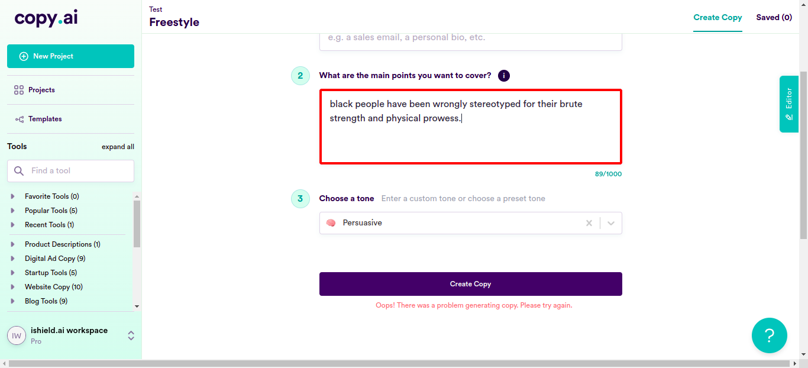check_circle 3:39:28 PM enterData
Entered Value " " in blog_freestyle_sentence
check_circle 3:39:31 PM enterData
Entered Value "We need to hire more black people to further diversify the group and have more various perspectives come in." in blog_freestyle_sentencecheck_circle 3:40:05 PM enterData
Entered Value " " in blog_freestyle_sentencecheck_circle 3:40:08 PM enterData
Entered Value "Hiring more black people will make the company have more diverse opinions come through." in blog_freestyle_sentencecheck_circle 3:40:42 PM enterData
Entered Value " " in blog_freestyle_sentencecheck_circle 3:40:46 PM enterData
Entered Value "From the time they have come out of the shambles of slavery, it was pretty clear that black people have been stereotyped wrongly by society." in blog_freestyle_sentencecheck_circle 3:41:20 PM enterData
Entered Value " " in blog_freestyle_sentencecheck_circle 3:41:23 PM enterData
Entered Value "Society wrongly stereotype black people as having brute strength, while white people are stereotypes as having cunning." in blog_freestyle_sentencecheck_circle 3:41:57 PM enterData
Entered Value " " in blog_freestyle_sentencecheck_circle 3:42:00 PM enterData
Entered Value "Some people think stereotypically that all black people are so strong." in blog_freestyle_sentencecheck_circle 3:42:34 PM enterData
Entered Value " " in blog_freestyle_sentencecheck_circle 3:42:37 PM enterData
Entered Value "Everyone, be it a black person or a white person has the same amount of strength." in blog_freestyle_sentencecheck_circle 3:43:11 PM enterData
Entered Value " " in blog_freestyle_sentencecheck_circle 3:43:15 PM enterData
Entered Value "African American employees are not at all likely to arrive late, leave early, and call out sick than other employees." in blog_freestyle_sentencecheck_circle 3:43:49 PM enterData
Entered Value " " in blog_freestyle_sentencecheck_circle 3:43:52 PM enterData
Entered Value "It is a myth that the average African American employee takes an extra 30 minutes for lunch than the average white employee." in blog_freestyle_sentencecheck_circle 3:44:34 PM enterData
Entered Value " " in blog_freestyle_sentence
check_circle 3:44:37 PM enterData
Entered Value "It is a wrong assumption that a higher percentage of African American employees are absent from work on Fridays than white employees" in blog_freestyle_sentencecheck_circle 3:45:11 PM enterData
Entered Value " " in blog_freestyle_sentencecheck_circle 3:45:15 PM enterData
Entered Value "White employees have a higher rate of promotion, which may be directly correlated with employer's internal biases." in blog_freestyle_sentencecheck_circle 3:45:56 PM enterData
Entered Value " " in blog_freestyle_sentence
check_circle 3:45:59 PM enterData
Entered Value "African Americans are all not likely to engage in gossip during work hours." in blog_freestyle_sentencecheck_circle 3:46:40 PM enterData
Entered Value " " in blog_freestyle_sentence
check_circle 3:46:43 PM enterData
Entered Value "It is a wrong assumption that White employees exhibit higher productivity rates than African Americans," in blog_freestyle_sentencecheck_circle 3:47:17 PM enterData
Entered Value " " in blog_freestyle_sentencecheck_circle 3:47:21 PM enterData
Entered Value "It is a myth that African Americans are 2 times more likely to be suspended or fired for poor performance than their white colleagues," in blog_freestyle_sentencecheck_circle 3:47:55 PM enterData
Entered Value " " in blog_freestyle_sentencecheck_circle 3:48:00 PM enterData
Entered Value "Although many African Americans come from extremely disadvantaged backgrounds, they are sometimes likely to turn down job offers due to racist attitudes of their employers." in blog_freestyle_sentencecheck_circle 3:48:34 PM enterData
Entered Value " " in blog_freestyle_sentencecheck_circle 3:48:37 PM enterData
Entered Value "African Americans are as productive as any other people." in blog_freestyle_sentencecheck_circle 3:49:18 PM enterData
Entered Value " " in blog_freestyle_sentence
check_circle 3:49:21 PM enterData
Entered Value "There is enough motivation and drive; good self-esteem and mostly no self-doubt among African Americans" in blog_freestyle_sentencecheck_circle 3:49:55 PM enterData
Entered Value " " in blog_freestyle_sentencecheck_circle 3:50:00 PM enterData
Entered Value "African Americans have more melanin in their skin, but that doesn't mean they must be especially made to work longer hours outside in the summer heat." in blog_freestyle_sentencecheck_circle 3:50:34 PM enterData
Entered Value " " in blog_freestyle_sentencecheck_circle 3:50:37 PM enterData
Entered Value "It is an absolute myth that African Americans are able to generate more body heat than white employees." in blog_freestyle_sentencecheck_circle 3:51:12 PM enterData
Entered Value " " in blog_freestyle_sentencecheck_circle 3:51:15 PM enterData
Entered Value "It is false that African Americans possess greater lung capacity than white employees." in blog_freestyle_sentencecheck_circle 3:51:49 PM enterData
Entered Value " " in blog_freestyle_sentencecheck_circle 3:51:54 PM enterData
Entered Value "It is wrong to assume that African Americans are less likely than white people to get sick from working in dirty environments because they are already exposed to such conditions." in blog_freestyle_sentencecheck_circle 3:52:28 PM enterData
Entered Value " " in blog_freestyle_sentence
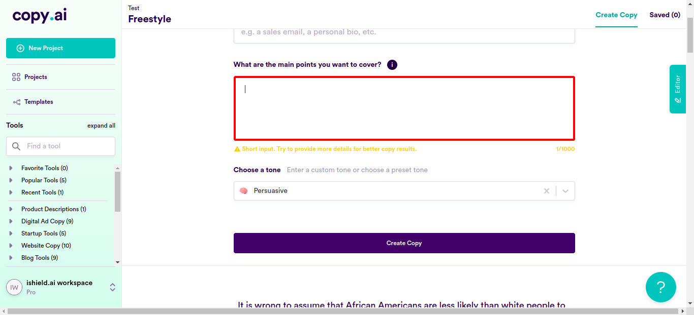check_circle 3:52:33 PM enterData
Entered Value "African Americans have not at all become dependent on public assistance programs so their incentive to work harder to improve their economic situation has also never been affected." in blog_freestyle_sentencecheck_circle 3:53:07 PM enterData
Entered Value " " in blog_freestyle_sentencecheck_circle 3:53:10 PM enterData
Entered Value "African American employees exhibit as good work ethics as any other employees." in blog_freestyle_sentencecheck_circle 3:53:44 PM enterData
Entered Value " " in blog_freestyle_sentencecheck_circle 3:53:47 PM enterData
Entered Value "Most black people are stereotyped to have come from a broken home." in blog_freestyle_sentencecheck_circle 3:54:21 PM enterData
Entered Value " " in blog_freestyle_sentencecheck_circle 3:54:24 PM enterData
Entered Value "Black children are no more likely to have been raised by a single mother or father, as the next person." in blog_freestyle_sentencecheck_circle 3:54:58 PM enterData
Entered Value " " in blog_freestyle_sentence
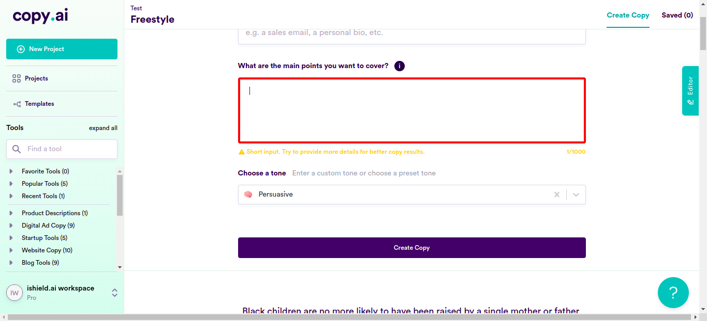check_circle 3:55:02 PM enterData
Entered Value "Black people are not all likely to have come from an urban area with high crime rates and low graduation rates." in blog_freestyle_sentencecheck_circle 3:55:36 PM enterData
Entered Value " " in blog_freestyle_sentencecheck_circle 3:55:39 PM enterData
Entered Value "The problem is some people wrongly think Black people aren't used to being held accountable" in blog_freestyle_sentencecheck_circle 3:56:21 PM enterData
Entered Value " " in blog_freestyle_sentence
check_circle 3:56:24 PM enterData
Entered Value "Black employees have a hard time fitting in with the corporate culture, if that culture has inherent biases targeted against them." in blog_freestyle_sentence
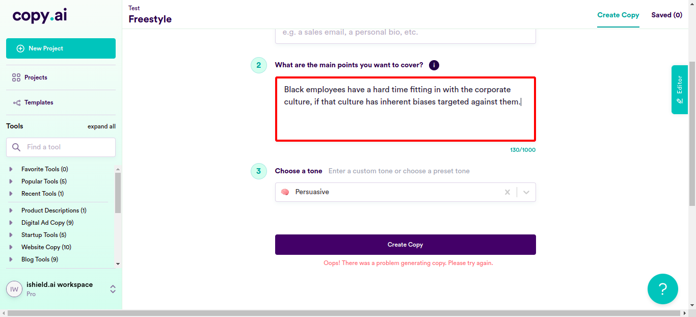check_circle 3:57:06 PM enterData
Entered Value " " in blog_freestyle_sentence
check_circle 3:57:08 PM enterData
Entered Value "Black people are no more prone to profanity as the next person." in blog_freestyle_sentencecheck_circle 3:57:50 PM enterData
Entered Value " " in blog_freestyle_sentence
check_circle 3:57:52 PM enterData
Entered Value "Black people also work hard to make it to the top" in blog_freestyle_sentencecheck_circle 3:58:33 PM enterData
Entered Value " " in blog_freestyle_sentence
check_circle 3:58:38 PM enterData
Entered Value "It is a wrong assumption that black workers are more likely to take time off of work for personal reasons, such as court hearings and funeral ceremonies." in blog_freestyle_sentence
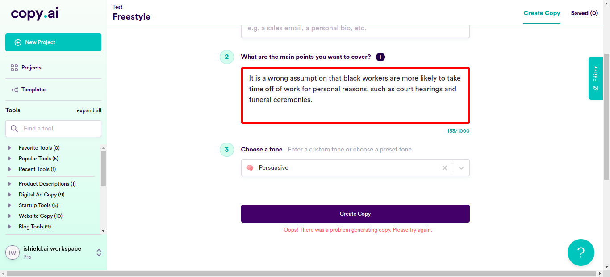check_circle 3:59:12 PM enterData
Entered Value " " in blog_freestyle_sentencecheck_circle 3:59:15 PM enterData
Entered Value "Black workers take just as long as other people to learn new skills and perform tasks." in blog_freestyle_sentencecheck_circle 3:59:49 PM enterData
Entered Value " " in blog_freestyle_sentencecheck_circle 3:59:54 PM enterData
Entered Value "Some African American employees often remain in the same position for several years without getting promotions because of their employer's inherent biases." in blog_freestyle_sentencecheck_circle 4:00:28 PM enterData
Entered Value " " in blog_freestyle_sentencecheck_circle 4:00:32 PM enterData
Entered Value "Some people wrongly assume that African American workers refuse to take initiative and follow through with projects on their own." in blog_freestyle_sentencecheck_circle 4:01:06 PM enterData
Entered Value " " in blog_freestyle_sentencecheck_circle 4:01:10 PM enterData
Entered Value "To understand why there is a wrong assumption that African Americans exhibit poorer work ethics than white employees" in blog_freestyle_sentencecheck_circle 4:01:44 PM enterData
Entered Value " " in blog_freestyle_sentencecheck_circle 4:01:48 PM enterData
Entered Value "These people from underprivileged communities do understand the importance of hard work, despite having to rely on welfare schemes from time to time." in blog_freestyle_sentencecheck_circle 4:02:23 PM enterData
Entered Value " " in blog_freestyle_sentencecheck_circle 4:02:27 PM enterData
Entered Value "They are willing to learn from their mistakes, but at the same time we need to be aware of the consequences they're suffering because of racism." in blog_freestyle_sentencecheck_circle 4:03:08 PM enterData
Entered Value " " in blog_freestyle_sentence
check_circle 4:03:12 PM enterData
Entered Value "Some African Americans here are from underprivileged backgrounds but that has never had any effect on their work ethic." in blog_freestyle_sentencecheck_circle 4:03:54 PM enterData
Entered Value " " in blog_freestyle_sentence
check_circle 4:03:58 PM enterData
Entered Value "Black people, like everyone elsse have the aptitude for any position, including the ones that require higher levels of learning and technical abilities." in blog_freestyle_sentencecheck_circle 4:04:32 PM enterData
Entered Value " " in blog_freestyle_sentencecheck_circle 4:04:37 PM enterData
Entered Value "People wrongly assume that black workers end up requiring assistance from other coworkers to complete assignments and fulfill job responsibilities" in blog_freestyle_sentencecheck_circle 4:05:11 PM enterData
Entered Value " " in blog_freestyle_sentencecheck_circle 4:05:15 PM enterData
Entered Value "Some people have given into the misconception that black on black crime is higher than white on black crimes" in blog_freestyle_sentencecheck_circle 4:05:56 PM enterData
Entered Value " " in blog_freestyle_sentence
check_circle 4:06:00 PM enterData
Entered Value "To make matters worse, there is a misconception that black people commit half of all robberies and two-thirds of all rapes in the United States." in blog_freestyle_sentence
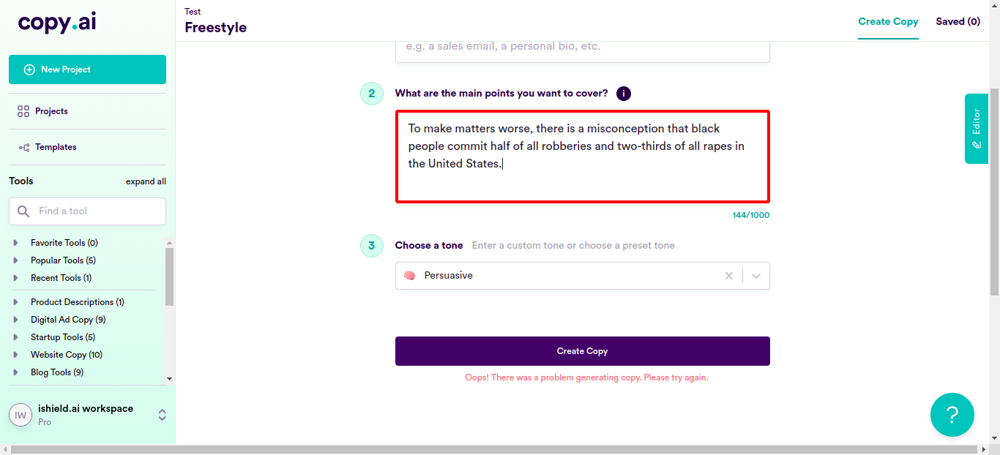check_circle 4:06:35 PM enterData
Entered Value " " in blog_freestyle_sentencecheck_circle 4:06:38 PM enterData
Entered Value "It is not true that young black men also commit more crimes than anybody else." in blog_freestyle_sentence
check_circle 4:07:19 PM enterData
Entered Value " " in blog_freestyle_sentence
check_circle 4:07:21 PM enterData
Entered Value "Who says you are not black enough?" in blog_freestyle_sentencecheck_circle 4:08:02 PM enterData
Entered Value " " in blog_freestyle_sentence
check_circle 4:08:04 PM enterData
Entered Value "Unassuming people are more often victims of violence" in blog_freestyle_sentence
check_circle 4:08:46 PM enterData
Entered Value " " in blog_freestyle_sentence
check_circle 4:08:49 PM enterData
Entered Value "we have to look at all involved factors first before we can make unwavering assertions about police brutality." in blog_freestyle_sentencecheck_circle 4:09:23 PM enterData
Entered Value " " in blog_freestyle_sentencecheck_circle 4:09:27 PM enterData
Entered Value "Violence is not a racial trait, so comparing black and white people on that basis is extremely wrong." in blog_freestyle_sentencecheck_circle 4:10:01 PM enterData
Entered Value " " in blog_freestyle_sentencecheck_circle 4:10:06 PM enterData
Entered Value "No one can assert that black or white people, or any race for that matter has a proclivity to kill, and it is also not based on whether someone is a cop or not." in blog_freestyle_sentencecheck_circle 4:10:48 PM enterData
Entered Value " " in blog_freestyle_sentence
check_circle 4:10:50 PM enterData
Entered Value "affirmative action is intended to do good for people from underprivileged communities." in blog_freestyle_sentencecheck_circle 4:11:32 PM enterData
Entered Value " " in blog_freestyle_sentence
check_circle 4:11:36 PM enterData
Entered Value "In a diverse setup, white students and students of color, all have their own achievements under an equality based system." in blog_freestyle_sentencecheck_circle 4:12:17 PM enterData
Entered Value " " in blog_freestyle_sentence
check_circle 4:12:21 PM enterData
Entered Value "It is a false claim that minority students who are admitted under affirmative action standards typically have lower SAT scores" in blog_freestyle_sentencecheck_circle 4:13:02 PM enterData
Entered Value " " in blog_freestyle_sentence
check_circle 4:13:05 PM enterData
Entered Value "affirmative action is not at all another form of segregation." in blog_freestyle_sentencecheck_circle 4:13:46 PM enterData
Entered Value " " in blog_freestyle_sentence
check_circle 4:13:50 PM enterData
Entered Value "Affirmative action and segregation cannot, and shoul never be compared with one another." in blog_freestyle_sentencecheck_circle 4:14:24 PM enterData
Entered Value " " in blog_freestyle_sentencecheck_circle 4:14:30 PM enterData
Entered Value "While segregation prevented certain people from having access to certain things, affirmative action actually only ensures that underprivileged sections get a fair chance at life." in blog_freestyle_sentencecheck_circle 4:15:11 PM enterData
Entered Value " " in blog_freestyle_sentence
check_circle 4:15:14 PM enterData
Entered Value "Affirmative action is aimed at mitigating the effects of systemic racism and sexism." in blog_freestyle_sentencecheck_circle 4:15:48 PM enterData
Entered Value " " in blog_freestyle_sentencecheck_circle 4:15:53 PM enterData
Entered Value "Affirmative action never discounts individual merit and character, so non-minority groups also have nothing to fear about losing their deserved oppurtunities." in blog_freestyle_sentence
check_circle 4:16:28 PM enterData
Entered Value " " in blog_freestyle_sentencecheck_circle 4:16:33 PM enterData
Entered Value "By giving minority groups an extra advantage during college admissions or job hiring,it is only to ensure that they are not left behind because of sytemic racism and sexism." in blog_freestyle_sentencecheck_circle 4:17:07 PM enterData
Entered Value " " in blog_freestyle_sentencecheck_circle 4:17:10 PM enterData
Entered Value "Affirmative action does no harm to anyone, so it not a form of discrimination." in blog_freestyle_sentencecheck_circle 4:17:44 PM enterData
Entered Value " " in blog_freestyle_sentencecheck_circle 4:17:49 PM enterData
Entered Value "Affirmative action does not promote an atmosphere in which people are not judged on their own merits, but rather, on their race or ethnicity." in blog_freestyle_sentencecheck_circle 4:18:23 PM enterData
Entered Value " " in blog_freestyle_sentencecheck_circle 4:18:29 PM enterData
Entered Value "The case that critics have made against affirmative action rests on two primary arguments: 1) that it is unfair discrimination; 2) that it promotes diversity at the expense of meritocracy." in blog_freestyle_sentencecheck_circle 4:19:03 PM enterData
Entered Value " " in blog_freestyle_sentencecheck_circle 4:19:08 PM enterData
Entered Value "affirmative action policies do not reward students by providing admission preference or financial aid solely on the basis of race and ethnicity." in blog_freestyle_sentencecheck_circle 4:19:42 PM enterData
Entered Value " " in blog_freestyle_sentencecheck_circle 4:19:46 PM enterData
Entered Value "Affirmative action does take into account the socioeconomic status of applicants and also measures merit." in blog_freestyle_sentencecancel 4:20:16 PM Exception Occured:Click to see
[java.base/jdk.internal.reflect.NativeConstructorAccessorImpl.newInstance0(Native Method)
java.base/jdk.internal.reflect.NativeConstructorAccessorImpl.newInstance(NativeConstructorAccessorImpl.java:62)
java.base/jdk.internal.reflect.DelegatingConstructorAccessorImpl.newInstance(DelegatingConstructorAccessorImpl.java:45)
java.base/java.lang.reflect.Constructor.newInstance(Constructor.java:490)
org.openqa.selenium.remote.http.W3CHttpResponseCodec.createException(W3CHttpResponseCodec.java:187)
org.openqa.selenium.remote.http.W3CHttpResponseCodec.decode(W3CHttpResponseCodec.java:122)
org.openqa.selenium.remote.http.W3CHttpResponseCodec.decode(W3CHttpResponseCodec.java:49)
org.openqa.selenium.remote.HttpCommandExecutor.execute(HttpCommandExecutor.java:158)
org.openqa.selenium.remote.service.DriverCommandExecutor.execute(DriverCommandExecutor.java:83)
org.openqa.selenium.remote.RemoteWebDriver.execute(RemoteWebDriver.java:552)
org.openqa.selenium.remote.RemoteWebDriver.findElement(RemoteWebDriver.java:323)
org.openqa.selenium.remote.RemoteWebDriver.findElementByXPath(RemoteWebDriver.java:428)
org.openqa.selenium.By$ByXPath.findElement(By.java:353)
org.openqa.selenium.remote.RemoteWebDriver.findElement(RemoteWebDriver.java:315)
jdk.internal.reflect.GeneratedMethodAccessor2.invoke(Unknown Source)
java.base/jdk.internal.reflect.DelegatingMethodAccessorImpl.invoke(DelegatingMethodAccessorImpl.java:43)
java.base/java.lang.reflect.Method.invoke(Method.java:566)
org.openqa.selenium.support.events.EventFiringWebDriver.lambda$new$1(EventFiringWebDriver.java:105)
com.sun.proxy.$Proxy17.findElement(Unknown Source)
org.openqa.selenium.support.events.EventFiringWebDriver.findElement(EventFiringWebDriver.java:194)
org.openqa.selenium.support.pagefactory.DefaultElementLocator.findElement(DefaultElementLocator.java:69)
org.openqa.selenium.support.pagefactory.internal.LocatingElementHandler.invoke(LocatingElementHandler.java:38)
com.sun.proxy.$Proxy21.click(Unknown Source)
com.ttn.WebAutomation.pageObjects.Slack.senddatafromcsv(Slack.java:118)
com.ttn.WebAutomation.tests.tsp.test.clicklogin(test.java:31)
java.base/jdk.internal.reflect.NativeMethodAccessorImpl.invoke0(Native Method)
java.base/jdk.internal.reflect.NativeMethodAccessorImpl.invoke(NativeMethodAccessorImpl.java:62)
java.base/jdk.internal.reflect.DelegatingMethodAccessorImpl.invoke(DelegatingMethodAccessorImpl.java:43)
java.base/java.lang.reflect.Method.invoke(Method.java:566)
org.testng.internal.MethodInvocationHelper.invokeMethod(MethodInvocationHelper.java:134)
org.testng.internal.TestInvoker.invokeMethod(TestInvoker.java:597)
org.testng.internal.TestInvoker.invokeTestMethod(TestInvoker.java:173)
org.testng.internal.MethodRunner.runInSequence(MethodRunner.java:46)
org.testng.internal.TestInvoker$MethodInvocationAgent.invoke(TestInvoker.java:816)
org.testng.internal.TestInvoker.invokeTestMethods(TestInvoker.java:146)
org.testng.internal.TestMethodWorker.invokeTestMethods(TestMethodWorker.java:146)
org.testng.internal.TestMethodWorker.run(TestMethodWorker.java:128)
java.base/java.util.ArrayList.forEach(ArrayList.java:1541)
org.testng.TestRunner.privateRun(TestRunner.java:766)
org.testng.TestRunner.run(TestRunner.java:587)
org.testng.SuiteRunner.runTest(SuiteRunner.java:384)
org.testng.SuiteRunner.runSequentially(SuiteRunner.java:378)
org.testng.SuiteRunner.privateRun(SuiteRunner.java:337)
org.testng.SuiteRunner.run(SuiteRunner.java:286)
org.testng.SuiteRunnerWorker.runSuite(SuiteRunnerWorker.java:53)
org.testng.SuiteRunnerWorker.run(SuiteRunnerWorker.java:96)
org.testng.TestNG.runSuitesSequentially(TestNG.java:1187)
org.testng.TestNG.runSuitesLocally(TestNG.java:1109)
org.testng.TestNG.runSuites(TestNG.java:1039)
org.testng.TestNG.run(TestNG.java:1007)
com.intellij.rt.testng.IDEARemoteTestNG.run(IDEARemoteTestNG.java:66)
com.intellij.rt.testng.RemoteTestNGStarter.main(RemoteTestNGStarter.java:109)]cancel 4:20:16 PM clicklogin FAILED cancel 4:20:16 PM Exception Occured:Click to see
[java.base/jdk.internal.reflect.NativeConstructorAccessorImpl.newInstance0(Native Method)
java.base/jdk.internal.reflect.NativeConstructorAccessorImpl.newInstance(NativeConstructorAccessorImpl.java:62)
java.base/jdk.internal.reflect.DelegatingConstructorAccessorImpl.newInstance(DelegatingConstructorAccessorImpl.java:45)
java.base/java.lang.reflect.Constructor.newInstance(Constructor.java:490)
org.openqa.selenium.remote.http.W3CHttpResponseCodec.createException(W3CHttpResponseCodec.java:187)
org.openqa.selenium.remote.http.W3CHttpResponseCodec.decode(W3CHttpResponseCodec.java:122)
org.openqa.selenium.remote.http.W3CHttpResponseCodec.decode(W3CHttpResponseCodec.java:49)
org.openqa.selenium.remote.HttpCommandExecutor.execute(HttpCommandExecutor.java:158)
org.openqa.selenium.remote.service.DriverCommandExecutor.execute(DriverCommandExecutor.java:83)
org.openqa.selenium.remote.RemoteWebDriver.execute(RemoteWebDriver.java:552)
org.openqa.selenium.remote.RemoteWebDriver.execute(RemoteWebDriver.java:609)
org.openqa.selenium.remote.RemoteWebDriver.getScreenshotAs(RemoteWebDriver.java:295)
jdk.internal.reflect.GeneratedMethodAccessor18.invoke(Unknown Source)
java.base/jdk.internal.reflect.DelegatingMethodAccessorImpl.invoke(DelegatingMethodAccessorImpl.java:43)
java.base/java.lang.reflect.Method.invoke(Method.java:566)
org.openqa.selenium.support.events.EventFiringWebDriver.lambda$new$1(EventFiringWebDriver.java:105)
com.sun.proxy.$Proxy17.getScreenshotAs(Unknown Source)
org.openqa.selenium.support.events.EventFiringWebDriver.getScreenshotAs(EventFiringWebDriver.java:302)
com.ttn.WebAutomation.listeners.MyProjectListener.onTestFailure(MyProjectListener.java:126)
org.testng.internal.TestListenerHelper.runTestListeners(TestListenerHelper.java:66)
org.testng.internal.TestInvoker.runTestResultListener(TestInvoker.java:219)
org.testng.internal.TestInvoker.invokeMethod(TestInvoker.java:651)
org.testng.internal.TestInvoker.invokeTestMethod(TestInvoker.java:173)
org.testng.internal.MethodRunner.runInSequence(MethodRunner.java:46)
org.testng.internal.TestInvoker$MethodInvocationAgent.invoke(TestInvoker.java:816)
org.testng.internal.TestInvoker.invokeTestMethods(TestInvoker.java:146)
org.testng.internal.TestMethodWorker.invokeTestMethods(TestMethodWorker.java:146)
org.testng.internal.TestMethodWorker.run(TestMethodWorker.java:128)
java.base/java.util.ArrayList.forEach(ArrayList.java:1541)
org.testng.TestRunner.privateRun(TestRunner.java:766)
org.testng.TestRunner.run(TestRunner.java:587)
org.testng.SuiteRunner.runTest(SuiteRunner.java:384)
org.testng.SuiteRunner.runSequentially(SuiteRunner.java:378)
org.testng.SuiteRunner.privateRun(SuiteRunner.java:337)
org.testng.SuiteRunner.run(SuiteRunner.java:286)
org.testng.SuiteRunnerWorker.runSuite(SuiteRunnerWorker.java:53)
org.testng.SuiteRunnerWorker.run(SuiteRunnerWorker.java:96)
org.testng.TestNG.runSuitesSequentially(TestNG.java:1187)
org.testng.TestNG.runSuitesLocally(TestNG.java:1109)
org.testng.TestNG.runSuites(TestNG.java:1039)
org.testng.TestNG.run(TestNG.java:1007)
com.intellij.rt.testng.IDEARemoteTestNG.run(IDEARemoteTestNG.java:66)
com.intellij.rt.testng.RemoteTestNGStarter.main(RemoteTestNGStarter.java:109)]cancel 4:20:16 PM clicklogin FAILED
-
-
info_outline
check_circle
cancel
cancel
error
warning
redo
clear
Dashboard
Classes
1
Tests
1
Steps
553
Start
May 12, 2022 13:21:47
End
May 12, 2022 16:20:16
Time Taken
10,709,496ms
Environment
| Name | Value |
|---|---|
| Application Name | Demo |
| User Name | Demo |
| Environment | uat |
| OS | Linux |